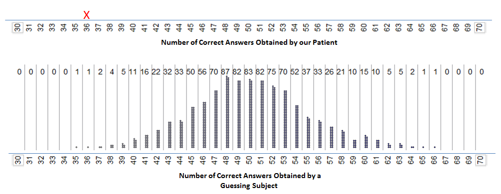
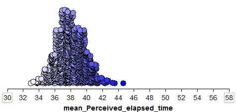

Introduction to Hypothesis Tests¶
Recall that statistical inference is the process of making guess about a population parameter using the information from a sample. One important type of statistical inference is the testing of a hypothesis about a population parameter and in this chapter we will explore some important statistical concepts related to hypothesis test. This is accomplished by considering a number of examples that use simulation to determine if there is strong evidence of a difference from the ideal situation.
In the first example, we investigate a claim about hearing loss, trying to determine if claimant is purposefully being dishonest. This example is introduced below and will be explored in a number of in-class activities.
Example 1.1: Insurance Fraud - Deafness¶
{kind=link}
Consider the following case study centered on potential insurance fraud regarding deafness. This case study was presented in an article by Pankratz, Fausti, and Peed titled “A Forced-Choice Technique to Evaluate Deafness in the Hysterical or Malingering Patient.” Source: Journal of Consulting and Clinical Psychology, 1975, Vol. 43, pg. 421-422. The following is an excerpt from the article:
The patient was a 27-year-old male with a history of multiple hospitalizations for idiopathic convulsive disorder, functional disabilities, accidents, and personality problems. His hospital records indicated that he was manipulative, exaggerated his symptoms to his advantage, and that he was a generally disruptive patient. He made repeated attempts to obtain compensation for his disabilities. During his present hospitalization he complained of bilateral hearing loss, left-sided weakness, left-sided numbness, intermittent speech difficulty, and memory deficit. There were few consistent or objective findings for these complaints. All of his symptoms disappeared quickly with the exception of the alleged hearing loss.
| To assess his alleged hearing loss, testing was conducted through earphones with the subject seated in a sound-treated audiology testing chamber. Visual stimuli utilized during the investigation were produced by a red and a blue light bulb, which were mounted behind a one-way mirror so that the subject could see the bulbs only when they were illuminated by the examiner. The subject was presented several trials on each of which the red and then the blue light were turned on consecutively for 2 seconds each. On each trial, a 1,000-Hz tone was randomly paired with the illumination of either the blue or red light bulb, and the subject was instructed to indicate with which light bulb the tone was paired. Because the researchers were implementing a “forced-choice” technique, the subject was forced to answer each time with either “red” or “blue.” |  |
Simulating the Guessing Distribution¶
In each of the examples in this chapter, we will be using TinkerPlots to simulate a distribution that is in contrast to our research hypothesis. In the case of evaluating the truthfulness of the claimant in the hearing loss example, our hypothesis is that the claimant was being purposefully dishonest when answering the questions. To test this claim, we will simulate the opposite distribution, that is the distribution of someone that cannot hear and is simply guessing which color is associated with the sound. We are looking for evidence that the claimant missed an unusual number of questions, compared to the number of correct answers of someone that was just guessing.
Note
Recall that we use a p-value to determing if a specified value is unusual. You might wish to review the section on p-values!
In the following video, we will illustrate simulating the guessing distribution and calculating a p-value using TinkerPlots.
Questions about Example 1.1¶
Recall that the subject was correct on 36 out of 100 trials when he was asked to identify whether the tone played with either the red or the blue light bulb.
Check your understanding
-
Q-150: What is the population of interest?
- (A) All trials of the experiment for a hearing impaired individual.
- Here we are imagining giving the survey to a claimant many, many times. This allows us to imagine what the number of correct answers should be if a person was truly guessing.
- (B) The 100 answer of a hearing impaired person that were observed.
- (C) Whether or not the hearing impaired person answered correctly.
-
Q-151: Which of the following best describes the sample?
- (A) All trials of the experiment for a hearing impaired individual.
- (B) The 100 answer of a hearing impaired person that were observed.
- We are thinking of the 100 answers are the sample for this experiement. In particular, we would note whether or not each questions was answered correctly.a
- (C) Whether or not the hearing impaired person answered correctly.
-
Q-152: Which of the following best describes the variable?
- (A) All trials of the experiment for a hearing impaired individual.
- (B) The 100 answer of a hearing impaired person that were observed.
- (C) Whether or not the hearing impaired person answered correctly.
- We are thinking of the 100 answers are the sample for this experiement. In particular, we would note whether or not each questions was answered correctly.a
Recall that we carried out a simulation study to determine whether this patient who was suspected of malingering had obtained too few correct answers. The results of the simulation study indicate what outcomes we expect from a guessing subject:
|  |
{kind=link}
-
Q-153: What does each dot/star represent?
- (A) One set of 100 trials
- HINT: Last class we recorded the number of correct guesses in 12 trials, but now we are doing 100 trials. What should we record?
- (B) One correct guess
- HINT: Last class we recorded the number of correct guesses in 12 trials, but now we are doing 100 trials. What should we record?
- (C) One trial
- HINT: Last class we recorded the number of correct guesses in 12 trials, but now we are doing 100 trials. What should we record?
- (D) The number of correct guesses in 100 trials
- Each dot represents to the number of correct guesses in 100 trials
-
Q-154: Based on the results of this simulation study, do you
believe the patient’s outcome of 36 correct out of 100 was consistent
with guessing, or do these results indicate that he may have been
answering incorrectly on purpose in order to mislead the researchers
into believing he was hearing impaired?
- (A) Answering incorrectly on purpose
- This answer would not be consistent with guessing, as the number of times that a hearing impaired person would guess 36 or fewer correct is very low.
- (B) Consistent with guessing
- Guessing 36 correct is not a typical result. Notice that it is very rare to guess 36 or fewer correct. If someone is guessing, it would be much more likely to between 40 and 60 answers correct.
-
Q-155: Now suppose that another person was tested in the same way, and this person
answered 48 out of the 100 trials correctly. Can we confidently conclude
that this person was purposefully answering the questions
incorrectly?
- (A) Yes
- To confidently establish that the person was answering incorrectly on purpose, we would need the person to get an unusually small number of correct answers. In this case, 48 correct would **not** be unusual as it happened fairly frequently in the simultion.
- (B) No
- While the person may have been answering incorrectly on purpose, their results were not unusual when compaired to someone that was guessing. Therefore we cannot confidently conclude that this person was making mistakes on purpose.
Next, we will work through a similar example and again use a simulation to determine how much evidence we have about a research claim.
Example 1.2 Helper vs. Hinderer?¶
In a study reported in a November 2007 issue of Nature, researchers investigated whether infants take into account an individual’s actions towards others in evaluating that individual as appealing or aversive, perhaps laying the foundation for social interaction (Hamlin, Wynn, and Bloom, 2007). In one component of the study, sixteen 10-month-old infants were shown a “climber” character (a piece of wood with “google” eyes glued onto it) that could not make it up a hill in two tries. Then they were shown two scenarios for the climber’s next try, one where the climber was pushed to the top of the hill by another character (“helper”) and one where the climber was pushed back down the hill by another character (“hinderer”). The infant was alternately shown these two scenarios several times. Then the child was presented with both pieces of wood (the helper and the hinderer) and asked to pick one to play with. The color and shape and order (left/right) of the toys were varied and balanced out among the 16 infants.
References
Hamlin, J. Kiley, Karen Wynn, and Paul Bloom. “Social evaluation by preverbal infants.” November 22, 2007. Nature, Volume 150.
Introducing Concepts of Statistical Inference. Rossman, Chance, Cobb, and Holcomb. NSF/DUE/CCLI # 0633349.
Questions
- Why was it important for the researchers to balance out the color, shape, and order of the toys across the study? For example, how would the study results have been affected if the researchers always made the helper toy a blue circle and the hinderer a yellow triangle?
- Identify the following in the context of this example:
- Population of interest:
- Sample:
- Variable of interest:
- Data type:
- Recall that this study involves 16 infants. If the population of all 10-month-old infants has no real preference for one toy over the other, how many infants do you expect to choose the helper toy? Explain.
- Suppose that 10 out of 16 infants choose the helper toy (62.5%). Since this value is higher than 50%, a researcher argues that these data show that the majority of all 10-month-old infants would choose the helper toy. What is wrong with their reasoning?
Once again, the key question is how to determine whether the study’s result is surprising under the assumption that there is no real preference for one toy over the other in the population of all 10-month-old infants. To answer this, we will simulate the process of 16 infants simply choosing a toy at random, over and over again. Each time we simulate the process, we’ll keep track of how many infants out of the 16 chose the *helper toy* (note that you could also keep track of the number that chose the hinderer toy). Once we’ve repeated this process a large number of times, we’ll have a pretty good sense for what outcomes would be very surprising, somewhat surprising, or not so surprising if the population of all 10-month-old infants has no real preference.
Simulation
Carry out the Tinkerplots simulation. Note that you should consider the following questions when designing your simulation study:
- What are the two possible outcomes on each of the trials? Change the values on your spinner accordingly.
- What is the probability that each outcome occurs under the assumption that the population of all 10-month-old infants has no real preference for either toy? Change your spinner accordingly.
- Be sure to change the Draw value to 1 since only one infant is choosing a toy at a time.
- How many infants were used in this study? Keep this value in mind when setting the Repeat value.
Carry out the simulation study 1000 times overall, keeping track of the number of infants that choose the helper toy in each of the simulated experiments.
Sketch in your results below:
 |
|---|
|  |
{kind=link}
Questions
- What does each dot on this plot represent?
- Suppose that in the actual study 10 out of 16 infants chose the helper toy. Would this convince you that the majority of the population of all 10-month-old infants had a preference for the helper toy? Why or why not?
- The actual study results are as follows: 14 out of 16 infants chose the helper toy. Mark this on the axis above the results of your simulations study. Based on this statistical investigation, what should the researchers conclude? Recall that their research question was stated as follows: Do 10-month-old infants tend to prefer the helper toy over the hinderer toy?